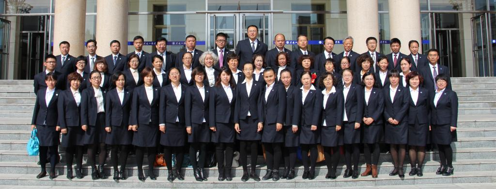
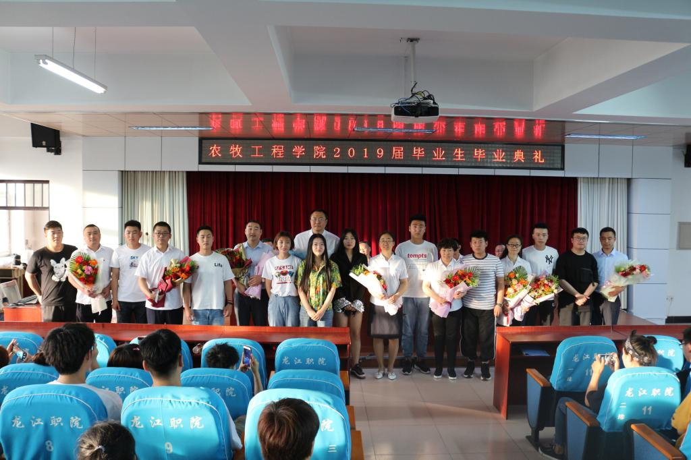
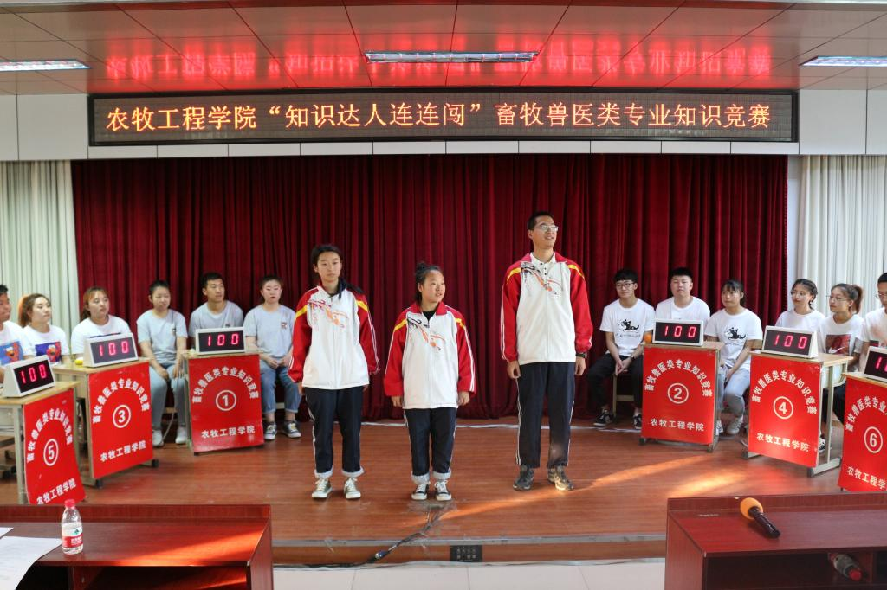
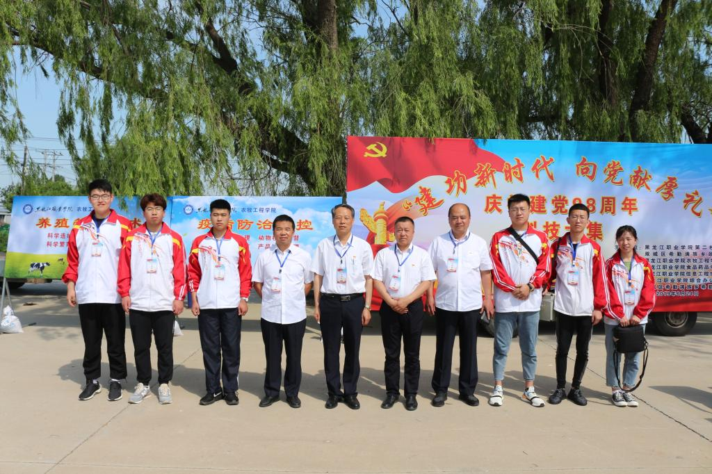

欢迎访问农牧工程学院！

教师风采
学院新闻更多>>

农牧工程学院2019届毕业生毕业典礼圆满结束

农牧工程学院“知识达人连连闯”

农牧工程学院师生为农户提供技术服务
通知公告更多>>
- 黑龙江职业学院农牧工程学院202...2019-05-22
- 关于印发《2019年黑龙江省高职...2019-06-01
- 关于2012届毕业生2011-2012学年...2019-02-21
- “学生顶岗实习手册”填写说明2019-02-21
- 农牧工程学院 第四周重点工作推...2019-02-21
- 农牧工程学院 第三周重点工作推...2019-02-21
- 农牧工程学院 第三周重点工作推...2019-02-21
- 农牧工程学院 第三周重点工作推...2019-02-21
- 农牧工程学院 第三周重点工作推...2019-02-21